Nuestra dirección cósmica: el entorno galáctico del Sol y el criterio de Jeans
Antes de hablar de cómo nacen los planetas hay que saber dónde estamos: del viento solar y la heliopausa a la burbuja local, las nubes oscuras donde nacen las estrellas, y el primer criterio físico de la formación estelar — la masa de Jeans, con el Saco de Carbón como ejemplo con números.
La formación planetaria es un área de investigación viva: no existe todavía «el libro» de la disciplina (a diferencia de la evolución estelar), y floreció con el Observatorio ALMA — construido principalmente para eso. En esta primera sesión el profesor decidió partir con una «clase 0»: antes de mostrar regiones de formación estelar, responder la pregunta que todo el mundo se hace primero: ¿dónde está todo eso? ¿A qué distancia? El viaje va de adentro hacia afuera — corona solar, viento solar, heliopausa, medio interestelar, burbuja local, nubes oscuras — y termina aterrizando en la física que abre el módulo: ¿cuándo una nube de gas se cae bajo su propio peso?
Una «clase 0»: por qué partir aquí
Formación planetaria = formación estelar, pero primero: ¿dónde ocurre todo esto?
El módulo trata sobre el origen de los planetas. Dos advertencias de entrada del profesor:
- Es un tema de investigación activo: «nada está escrito en piedra», hay cabos sueltos y algunas contradicciones. La teoría de estructura y evolución estelar se consolidó en el siglo XX y tiene libros de texto establecidos; la formación planetaria no.
- El área floreció con ALMA (Atacama Large Millimeter/submillimeter Array): fue la principal razón por la cual se construyó ese observatorio, y los resultados cambian todos los años.
Los planetas se forman junto con sus estrellas, así que un curso de formación planetaria parte inevitablemente por formación estelar. Pero la primera pregunta del público siempre es de ubicación: ¿dónde están esas regiones de formación estelar, a qué distancia? De ahí esta «clase 0» sobre el entorno galáctico del Sol: construir puntos de referencia, de lo más cercano a lo más lejano.
La primera vez que dictó el curso partió directo con la clase 1, pero las preguntas de los estudiantes lo convencieron de que había que partir por ubicarse. Esta sesión cubre esa clase 0 completa y alcanza a abrir la clase 1 (colapso gravitacional).
La clase 0 es como resolver la jerarquía de memoria de un sistema antes de optimizarlo: no puedes razonar sobre los procesos (formación de planetas) sin saber primero en qué «nivel» ocurre cada cosa y cuántos órdenes de magnitud separan un nivel del siguiente. Aquí los niveles van desde 1 unidad astronómica hasta kiloparsecs — y como en la jerarquía de memoria, cada salto es multiplicativo, no aditivo.
La corona solar: eclipses, manchas y protuberancias
Los «pétalos» que se ven en un eclipse total son la raíz del viento solar.
La clase partió con imágenes de eclipses totales de Sol — La Serena 2019, Putre 1994, Hungría 1999, Rapa Nui 2010 —, porque en un eclipse destaca la corona solar: esos pétalos gigantes que se extienden mucho más allá del disco solar. La forma de la corona cambia de un eclipse a otro: en el máximo del ciclo solar es grande y estructurada; en un mínimo (como el 2019 en La Serena) es pequeñita, y la totalidad se ve más oscura.
De la mancha solar a la protuberancia
- Las manchas solares son regiones frías de la fotosfera, producto de fenómenos complejos de magnetohidrodinámica (MHD) que aún no se comprenden bien y que siguen el ciclo solar de ~11 años.
- En su vecindad se forman arcos de gas ionizado amarrados por líneas de campo magnético (se observan p. ej. a 171 Å, y en He II a 304 Å — helio ionizado una vez; en notación astronómica He I es neutro y He II ionizado).
- Esos arcos contienen gas a ~10⁶ K — mucho más caliente que la fotosfera — bajo presión, confinado magnéticamente. Los arcos se estiran y crecen en horas o días hasta superar el tamaño de la Tierra… y se rompen.
Una protuberancia que revienta es como cortar una manguera a presión: sale un chorro disparado y la manguera «se vuelve loca». El chorro de gas caliente eyectado desde la mancha solar es el origen de las eyecciones de masa — y de los pétalos que vemos en los eclipses.
El viento solar y la espiral de Arquímedes
El Sol rota mientras eyecta: los chorros se enrollan.
Como el Sol rota mientras eyecta material, los chorros no salen en línea recta radial: se van «arrastrando» y forman una espiral de Arquímedes. La analogía de la clase: si giras sobre tu propio eje con la manguera del jardín abierta, el chorro dibuja una espiral. Los pétalos de la corona son la raíz de ese flujo: el viento solar.
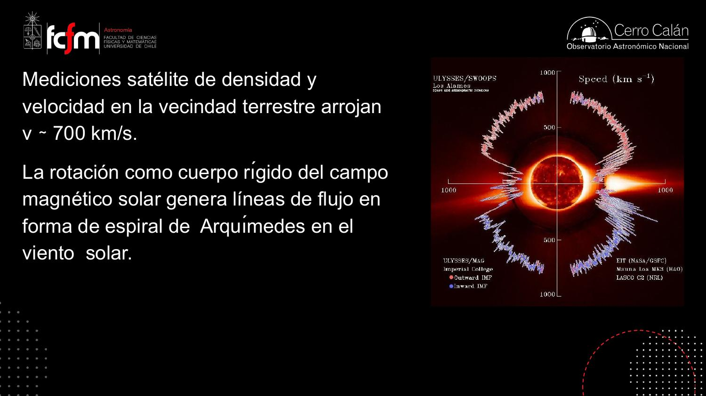
El viento solar permea todo el sistema solar y va de la mano con el campo magnético solar: el viento sigue las líneas de campo y al mismo tiempo las transporta. En un máximo solar la estructura se infla; en un mínimo se contrae — respira con el ciclo de 11 años. En ese sentido, la Tierra está dentro de la atmósfera extendida del Sol.
La espiral de Arquímedes (r ∝ θ) aparece en cualquier emisor rotante con flujo radial constante — el mismo patrón del aspersor de jardín o de un cabezal de impresión sobre un disco girando. En heliofísica se le llama espiral de Parker: conocer su geometría importa para pronosticar «clima espacial», porque define cuándo una eyección de masa coronal intersecta la órbita terrestre.
Cometas: dos colas que delatan al viento solar
Hale-Bopp y McNaught como sondas naturales del sistema solar.
Todo cometa clásico tiene dos colas, y cada una revela un mecanismo físico distinto:
- La cola iónica: partículas del viento solar arrastran material del cometa por roce; la cola sigue las líneas del campo magnético solar (que se van enrollando) y emite en líneas espectrales — por eso se ve de color distinto (azulada).
- La cola de polvo: la presión de radiación del Sol empuja los «copitos de nieve» y granos del cometa. Los fotones llevan momentum lineal: al chocar con el polvo, lo arrastran. Esta cola se ve blanca porque simplemente refleja la luz solar.
En un punto dado de la órbita, el viento solar apunta en una dirección y la radiación en otra: por eso las dos colas se separan.
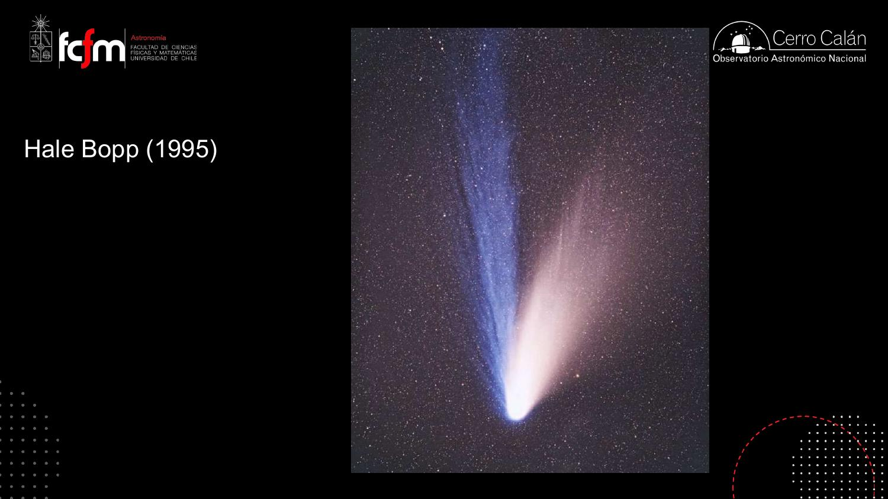
El cometa McNaught (2007) sí se pudo ver desde Chile, al anochecer (el profesor lo vio desde Farellones; hay una foto tomada desde Paranal en las diapositivas). Menos luminoso que Hale-Bopp pero con una cola que cruzaba el cielo completo: varias unidades astronómicas de largo. Moraleja: el viento solar arrastra material cometario a escalas que no son un detalle — son estructuras mayores del sistema solar.
La heliosfera: donde termina el sistema solar
Una burbuja magnética que nos protege — y define la frontera.
El viento solar (con su campo magnético a cuestas) actúa como una barredora (snowplow): despeja el material de la vecindad del Sol y crea una cavidad — la heliosfera. Sus fronteras:
- Termination shock (choque de terminación): la esfera interior, donde el viento solar se frena bruscamente.
- Heliopausa: donde se acaba la influencia del campo magnético solar. Entre ambas hay una región de transición (heliosheath).
- Como el Sol se mueve relativo al gas de afuera, se forma además una onda de choque de proa (bow shock) — como la de un bote avanzando en el agua.
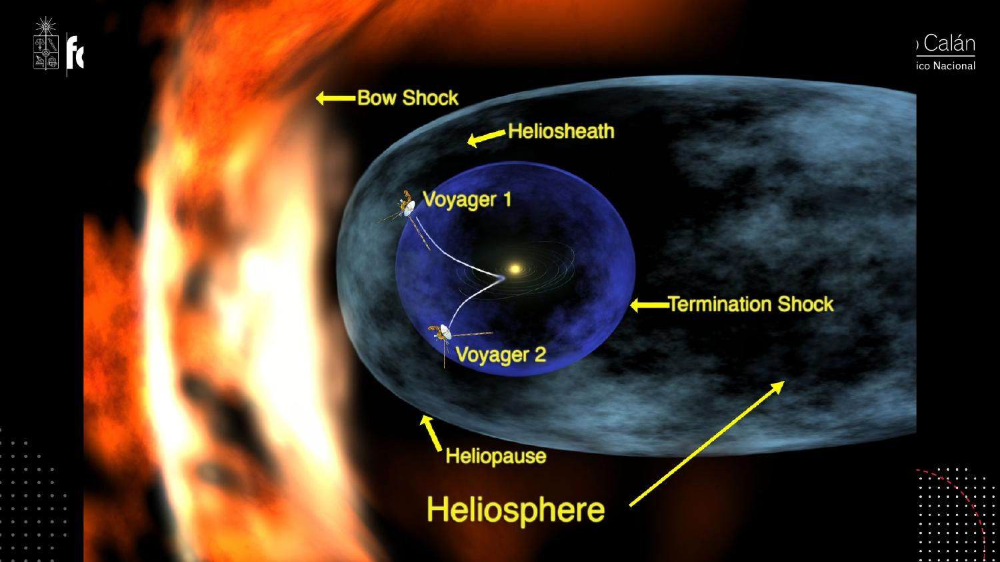
El espacio entre Urano y Neptuno es mucho más vacío que el exterior de la heliopausa. Afuera de la burbuja ya no hay «vacío del sistema solar»: hay gas interestelar, más denso. La frontera del sistema solar no es el último planeta, sino donde cambian las condiciones físicas (temperatura, densidad, composición).
¿Y la nube de Oort?
La nube de Oort es una hipótesis — nadie la ha observado directamente. Representa un conjunto de cometas de muy largo período, ligados gravitacionalmente al Sol pero que viven fuera del sistema solar en el sentido físico: las condiciones donde están (temperatura, densidad, química) son las del medio interestelar. Analogía de la clase: un satélite en órbita terrestre sigue ligado a la Tierra, pero no está en la Tierra — la Tierra se acaba donde termina su atmósfera.
¿Qué hay justo afuera? Cartografía del gas local
Espectroscopía + efecto Doppler = un mapa del gas entre las estrellas.
Podemos cartografiar el sistema solar planeta por planeta, pero al cruzar la heliopausa la pregunta es: ¿cuál es el entorno galáctico del Sol? La herramienta clásica (años 90) es la espectroscopía de absorción:
- Se observa una estrella cercana (p. ej. Alfa Centauri, la más cercana, a ~4,4 años luz) con un espectrógrafo.
- El gas interestelar entre nosotros y la estrella imprime rasgos de absorción estrechos en el espectro.
- Cada rasgo aparece corrido en longitud de onda según la velocidad radial de la nube que lo produce (efecto Doppler — igual que Hα a 6563 Å o Hβ a 4861 Å se corren si el gas se mueve).
- Si hacia Alfa Centauri se ven dos rasgos a dos velocidades (del orden de unos pocos km/s de diferencia), se infieren dos nubes en esa línea de visión. Se repite hacia Sirio, Proción, Altair… y se triangula.
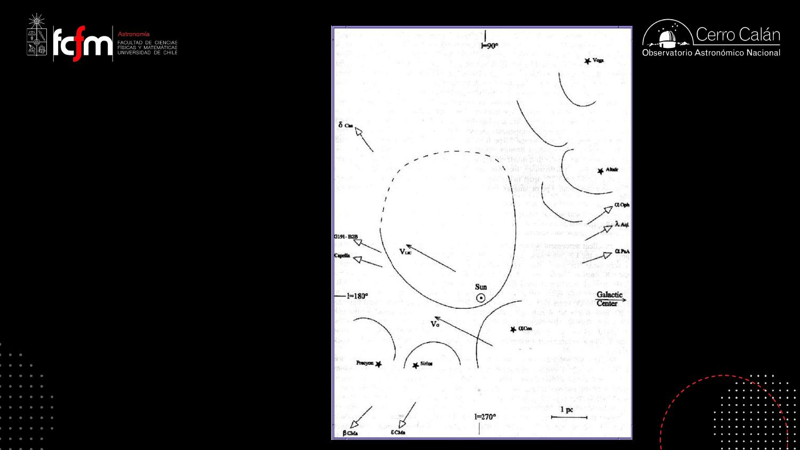
El Sol se mueve, la nube casi no
En estos mapas aparece un vector clave: la velocidad del Sol relativa al baricentro de las estrellas vecinas (el promedio de velocidades de las estrellas dentro de ~10 parsec, reconstruido con espectroscopía y movimientos propios). El Sol no está quieto: se mueve respecto a ese baricentro, aproximadamente hacia el centro galáctico y algo hacia el sur. Y resulta que la velocidad de la nube ionizada local es parecida a la del baricentro: la nube está relativamente quieta — es el Sol el que la atraviesa.
Esto es un problema inverso clásico: mediciones integradas a lo largo de líneas de visión (absorción acumulada) de las que hay que reconstruir un campo 3D (densidad). Es exactamente la matemática de la tomografía computarizada: cada espectro es una «proyección» y el mapa se obtiene invirtiendo el conjunto. Con pocas líneas de visión (años 90) la solución se dibuja a mano; con miles (sección siguiente), se optimiza numéricamente.
La burbuja local: de bocetos a Gaia
El Sol vive en un hueco de baja densidad, rodeado de murallas de gas.
A principios de los 2000, la astrónoma francesa Rosine Lallement repitió el ejercicio de los 90 pero con miles de estrellas y un programa computacional: cada celda de un cubo 3D es un parámetro libre de densidad, y se optimiza el conjunto para reproducir la absorción observada hacia cada estrella (una estrella cercana muestra poca absorción; una lejana tras una nube, mucha). Ya no es un boceto: es una medición de la densidad del medio interestelar local.
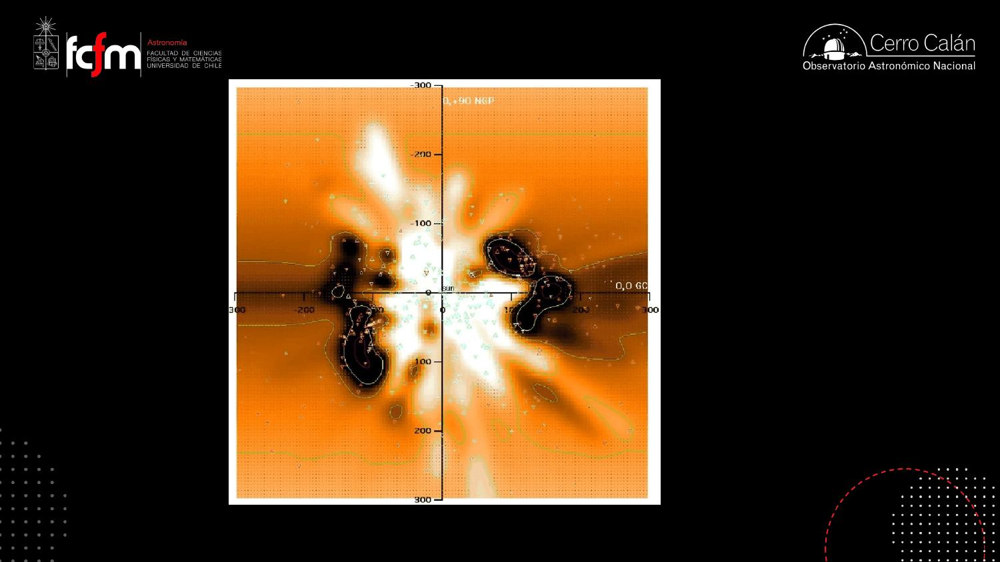
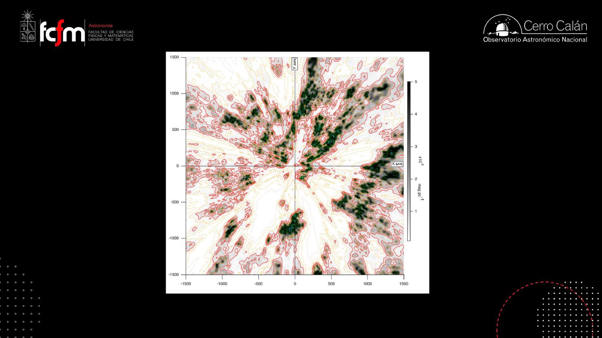
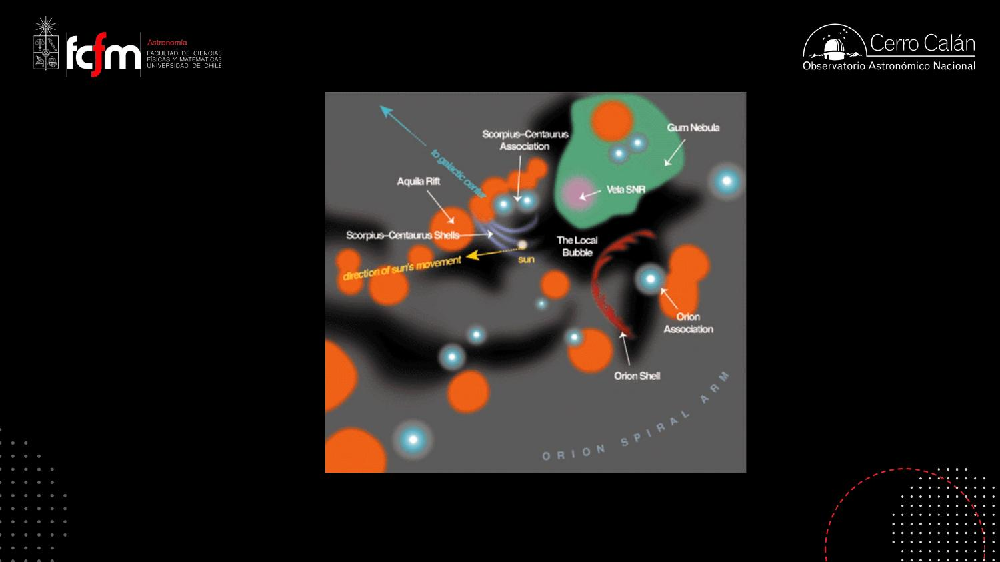
Los mapas modernos no reportan densidad directamente sino extinción (magnitudes por parsec): cuánto oscurece esa nube a una estrella de fondo. Más denso ⇒ más oscurece. Es una medida indirecta de la densidad de polvo+gas.
En las direcciones de los polos galácticos hay poca densidad: la cavidad está «abierta» hacia arriba y abajo. Por suerte — si hubiera nubes densas hacia los polos, no podríamos observar otras galaxias desde nuestra posición.
Supernovas: las escultoras del medio interestelar
La burbuja local no es una burbuja: es una chimenea excavada por explosiones.
¿Qué hace esos huecos en el plano galáctico? Las supernovas. La envoltura de una estrella que explota sale disparada a cientos de km/s, acarreando momentum e inercia: despeja todo a su paso y excava cavidades esféricas que crecen hasta alcanzar el borde del plano galáctico — y entonces revientan hacia afuera, botando el material fuera del plano.
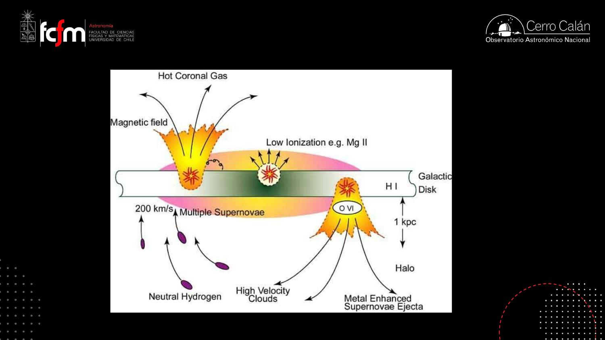
De ahí que convenga hablar de chimenea local más que de burbuja local: la cavidad donde vive el Sol está abierta hacia los polos, exactamente como las cavidades que dejan las supernovas. Es una de las razones para pensar que la burbuja local fue excavada por explosiones de supernova.
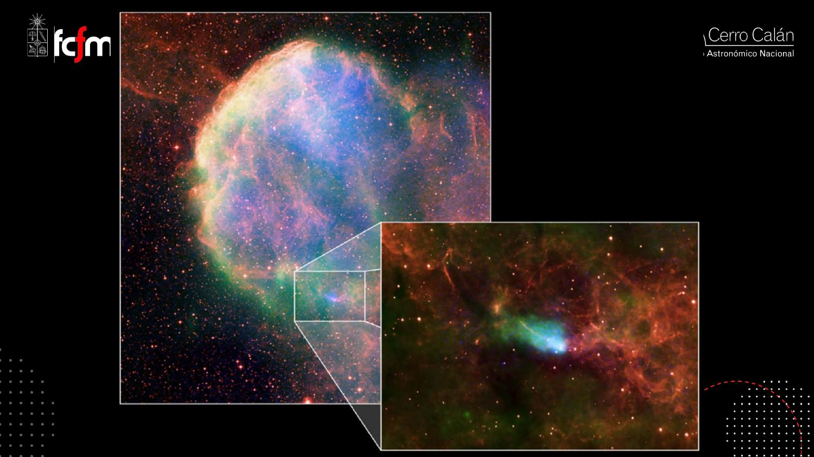
El efecto patada (kick)
¿Por qué la estrella de neutrones no está en el centro? Una supernova es el rebote del cuerpo de la estrella sobre su propio núcleo: los protones se recombinan con los electrones (desaparece el sustento de presión de electrones), el núcleo se vuelve una «sopa de neutrones» densísima, y toda la envoltura cae sobre él. Esa caída nunca es perfectamente simétrica: un lado cae un poco más rápido, y el desbalance de momentum dispara la estrella de neutrones a miles de km/s — el efecto patada (kick effect).
El kick es conservación de momentum pura: como el retroceso de un arma o el desbalanceo de un rotor. Si un colapso de ~1 M☉ tiene una asimetría de una parte en mil en el momentum eyectado, el remanente compacto se lleva el residuo — y con masas y velocidades estelares, ese «residuo» son miles de km/s. Los errores de cancelación pequeños sobre cantidades enormes dominan el resultado, igual que en aritmética de punto flotante.
El Sol viajero: movimiento epicíclico y clima galáctico
La burbuja local es un detalle transitorio en la vida del Sol.
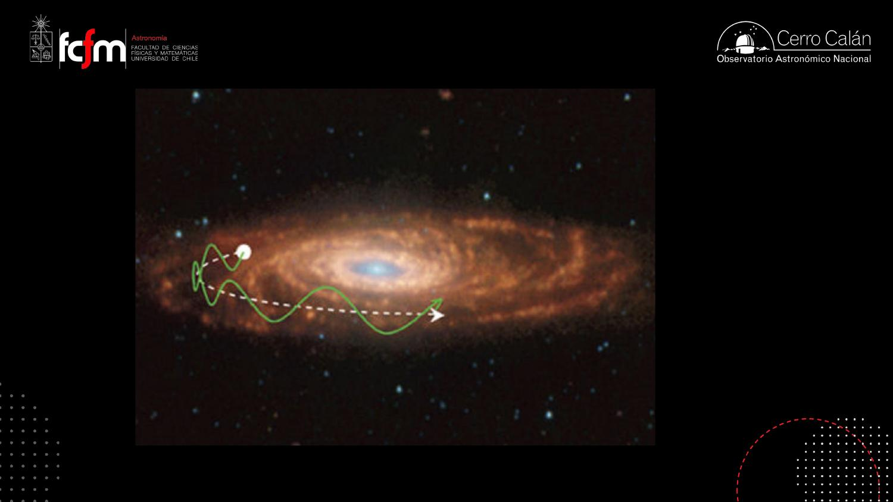
- Las estrellas nacen en el plano galáctico y van adquiriendo velocidades peculiares por encuentros gravitacionales con otras estrellas: mientras más vieja una estrella, más dispersa y caótica su trayectoria (las estrellas del halo, las más antiguas, se mueven en todas direcciones).
- El Sol tiene ~4.500 millones de años: es una estrella relativamente vieja, y hoy está casualmente en la mitad del plano galáctico — pero no siempre fue así.
- La edad cinemática de la burbuja/chimenea local (tamaño ÷ velocidad típica) es de ~1 millón de años según la clase: el Sol entró hace poco a esta estructura, y en ~1 millón de años más estará en otro entorno — quizás dentro de una nube densa, quizás fuera del plano.
La pista de la metalicidad: el Sol migró
La metalicidad (fracción de elementos más pesados que el helio, relativa al hidrógeno) del Sol es aproximadamente la misma que la de las estrellas jóvenes que nacen hoy en la vecindad solar. Eso es raro: el enriquecimiento químico es más rápido hacia el centro galáctico (más formación estelar, más supernovas) y más lento afuera. La lectura: el Sol nació más adentro — en un anillo molecular donde su metalicidad era la normal — y migró hacia afuera, a una zona químicamente más «lenta» que recién ahora alcanza esa metalicidad.
Si el Sol entrara en una nube densa, la heliosfera se achicaría (por mucho que sople el viento solar, no despeja material tan denso) y podría meterse material interestelar entre el Sol y la Tierra — con posibles efectos sobre el clima terrestre. Es un área de investigación incipiente («clima galáctico»). El problema de reconstruir la trayectoria pasada del Sol es brutal: la galaxia tiene ~100.000 millones de estrellas y el problema de N cuerpos se vuelve caótico — tenemos posición y velocidad instantáneas, pero la «máquina del tiempo» dinámica no llega lejos. (Nota: la transcripción menciona aquí un término inaudible —«la Heracles»— que no pudimos resolver; posiblemente alude a episodios climáticos o a una estructura galáctica.)
Integrar la órbita del Sol hacia atrás es un problema de sensibilidad a condiciones iniciales: como en cualquier sistema caótico, el error crece exponencialmente con el tiempo de integración (piensa en el exponente de Lyapunov como un «interés compuesto» del error numérico). Con 8 planetas el sistema solar ya se pone caótico en escalas largas; con 10¹¹ estrellas cuyas posiciones y masas conocemos con incerteza, la predictibilidad retrospectiva se degrada rápidamente.
Donde nacen estrellas (y planetas): las nubes oscuras y Ofiuco
El puente hacia el resto del módulo: de la Vía Láctea a los discos de ALMA.
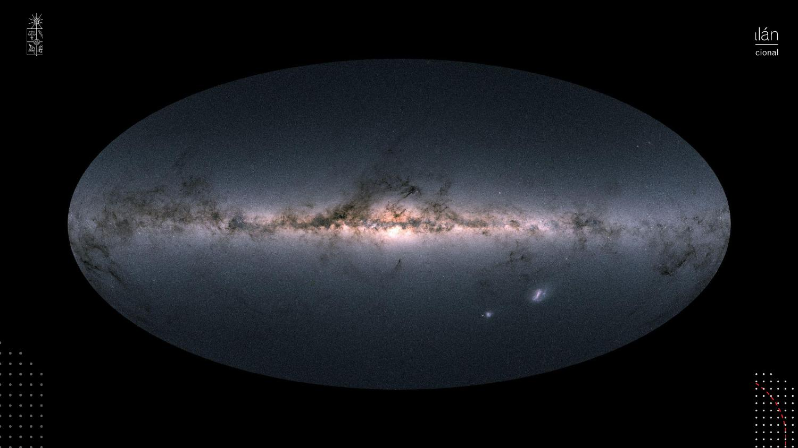
El plano de la eclíptica está fuertemente inclinado (casi perpendicular) respecto al plano galáctico. Desde el hemisferio sur miramos hacia el centro galáctico (la parte más rica de la Vía Láctea); desde el norte, hacia el anticentro. A los observadores del norte «les tocan menos estrellas» — además de cielos menos oscuros que los chilenos.
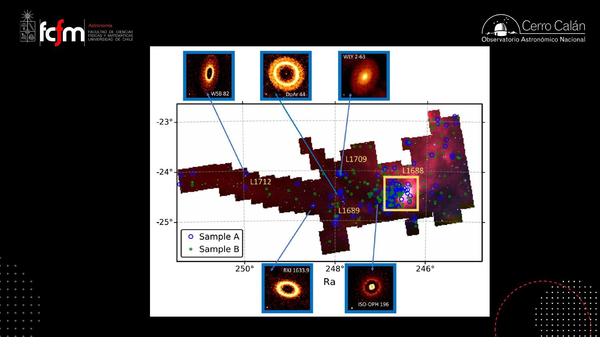
Síntesis de la clase 0: las estrellas nuevas nacen en las regiones densas y oscuras de los bordes de la burbuja local. La más cercana es Ofiuco. Y alrededor de sus estrellas recién nacidas, ALMA ve discos protoplanetarios: el escenario de la formación planetaria.
Clase 1: colapso gravitacional y la masa de Jeans
«Sea una nube molecular esférica…» — gravedad contra presión térmica.
Con el mapa en mano, empieza la física. Los planetas nacen junto con las estrellas, así que la pregunta inicial es: ¿cuándo una nube de gas colapsa para formar estrellas? Al estilo del chiste de la vaca esférica de los físicos, modelamos una nube molecular esférica y homogénea de masa \(M\), radio \(R\) y temperatura \(T\), compuesta de moléculas de hidrógeno (H₂), y comparamos dos energías:
La intuición primero: la temperatura significa presión (ley de gas ideal, \(P = n k_B T\)) que sostiene a la nube; la gravedad tira hacia adentro. Si la energía gravitacional le gana a la térmica, la nube se cae bajo su propio peso:
La misma condición como densidad crítica
Escribiendo la masa como densidad por volumen, \(M = \tfrac{4}{3}\pi R^3 \rho\), se despeja \(R \propto (M/\rho)^{1/3}\) y la condición se reescribe como una densidad mínima:
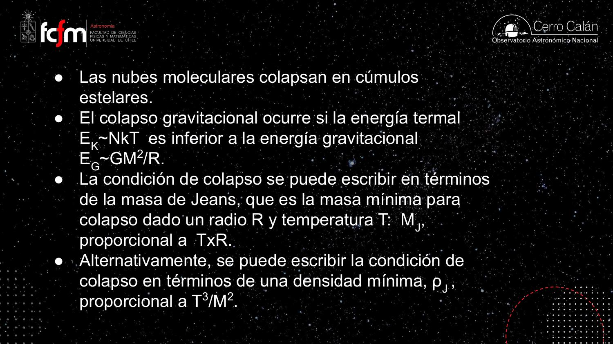
El criterio de Jeans es un análisis dimensional con umbral, como los números adimensionales de la ingeniería (Reynolds, Rayleigh): se comparan dos términos de energía y el cociente EG/EK ≈ 1 define la transición de régimen (estable ↔ colapso). No da los detalles de la dinámica, pero predice cuándo cambia el comportamiento — que es lo que uno pide de un criterio de estabilidad.
El Saco de Carbón: un ejemplo con números
Una nube que ya está colapsando… pero que no puede formar un Sol directamente.
El Saco de Carbón es la mancha oscura junto a la Cruz del Sur, visible todo el año desde Chile (cerca brillan Alfa Centauri y Hadar — Beta Centauri). Su masa se estima con técnicas relativamente sencillas: por extinción (cuánto oscurece las estrellas de fondo, el mismo principio de los mapas 3D) o por líneas espectrales de monóxido de carbono (CO), extrapolando a la masa total de H₂ mediante la abundancia relativa de CO — que también entrega la temperatura.

- Datos observados: M ∼ 1000 M☉, T ∼ 20 K, densidad ∼ 10⁻²² kg/m³ (~10⁵ partículas/m³ — poquísimo comparado con condiciones terrestres: el aire tiene ~10²⁵ moléculas/m³).
- Esa densidad coincide con la densidad de Jeans para esa masa y temperatura: el Saco de Carbón está empezando a caerse bajo su propio peso.
- Pero ojo: para colapsar 1 M☉ a la misma temperatura se necesita una densidad un millón de veces mayor — porque la masa entra al cuadrado en el denominador de ρJ (mil veces menos masa ⇒ 1000² = 10⁶ veces más densidad requerida).
La nube difusa colapsa como un todo, pero ese colapso no basta para formar un Sol: le falta un factor 10⁶ en densidad. La propuesta: el colapso ocurre primero a gran escala, y a medida que la densidad sube, se van haciendo inestables (colapsables) regiones cada vez más pequeñas — la nube se fragmenta, quizás hasta la escala de una masa solar. Este mecanismo jerárquico se desarrolla en la próxima clase.
Fragmentación de nubes de ~1000 M☉, el colapso como caída libre (con tiempo que depende solo de la densidad), el frenado por ionización, y la formación del disco protoplanetario por conservación de momentum angular — el resto de las diapositivas de la Clase 1.
Explorar conceptos
Tres widgets para jugar con las ideas de la clase.
Conceptos clave
Tabla de repaso rápido.
| Concepto | Qué es / valor | Por qué importa |
|---|---|---|
| Corona solar | Los «pétalos» visibles en eclipses totales; cambia con el ciclo solar (~11 años) | Es la raíz de las eyecciones de masa y del viento solar |
| Protuberancias | Arcos de gas a ~10⁶ K confinados por campo magnético sobre manchas solares | Al romperse eyectan los chorros que alimentan el viento |
| Viento solar | Flujo de plasma; ~700–1000 km/s en regiones polares; espiral de Arquímedes por rotación | Permea el sistema solar y despeja el material vecino |
| Dos colas cometarias | Iónica (viento solar, emite líneas) + polvo (presión de radiación, refleja luz) | Evidencia visible de la interacción cuerpos ↔ viento solar |
| Heliopausa | Frontera donde acaba la influencia del campo magnético solar (tras el termination shock) | Define el fin físico del sistema solar; las Voyager la cruzaron |
| Nube de Oort | Hipótesis: cometas de largo período, ligados al Sol pero en condiciones interestelares | Ligado gravitacionalmente ≠ estar «dentro» del sistema solar |
| Nube ionizada local | Nube tenue que el Sol atraviesa, justo afuera de la heliopausa | Primer «peldaño» del medio interestelar; mapeada por absorción |
| Absorción interestelar + Doppler | Rasgos estrechos en espectros estelares, corridos según velocidad de cada nube | Método para contar y cartografiar nubes en cada línea de visión |
| Burbuja / chimenea local | Cavidad de baja densidad de ~100 pc, abierta hacia los polos galácticos | Probable cavidad de supernovas; el Sol la ocupa hace ~1 Myr |
| Cinturón de Gould | Anillo de regiones densas (~100 pc): Tauro, Perseo, Ofiuco, Escorpión… | Los «muros» de la burbuja: ahí nacen las estrellas cercanas |
| Fuente galáctica | Supernovas expulsan gas del plano; se enfría, recombina y recae | Fuente de energía que estructura y recicla el medio interestelar |
| Efecto patada (kick) | Colapso asimétrico dispara la estrella de neutrones a miles de km/s | Explica remanentes con el resto estelar descentrado |
| Movimiento epicíclico | El Sol oscila vertical y radialmente («nada mariposa»); vuelta galáctica ~200 Myr | El entorno actual del Sol es transitorio |
| Migración solar | Metalicidad solar ≈ la de estrellas jóvenes vecinas ⇒ nació más adentro y migró | La química delata la historia dinámica del Sol |
| Masa de Jeans | — masa mínima para colapso dado R y T | El criterio básico de la formación estelar |
| Densidad de Jeans | — densidad mínima para colapsar una masa M | Masas chicas exigen densidades enormes ⇒ fragmentación |
| Saco de Carbón | M ∼ 10³ M☉, T ∼ 20 K, n ∼ 10⁵ m⁻³ ≈ ρJ | Ejemplo real: colapsa como un todo, pero no puede formar 1 M☉ sin fragmentarse |
Exámenes de práctica
10 exámenes de 5 preguntas (3 de alternativas autocorregibles + 2 de respuesta escrita).